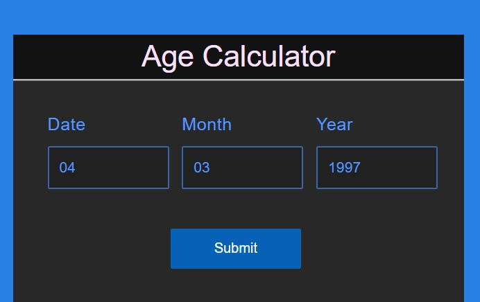

מחשבון גיל זה מקבל גילו של אדם על פי תאריך הלידה שלו. שיטות חישוב הגיל עשויות להשתנות ממדינה למדינה, אך באופן כללי, הגיל של אדם מתייחס לשנה אחת בכל יום הולדת שלו.
מחשבון גיל מקוון זה הוא כלי חשוב ופשוט המיועד לשימוש במגוון רב של תרחישים. הוא יכול לקבוע את הגיל של אנשים מתחילת חייהם ועד סופם, על ידי חישוב שנים, חודשים וימים, באמצעות קלט של תאריך הלידה שלהם ותאריך היום הנוכחי.
מה עושה מחשבון גיל?
מחשבון גיל מקוון הוא כלי בתוך האינטרנט שנועד לחשב את הגיל של אדם בתאריך ספציפי, בהנחה שתאריך הלידה (DOB) שלו ידוע. ברוב התרבויות המערביות, חישוב הגיל נעשה בדרך כלל על פי עיגול למטה, לכן אם אדם חי בן 8 שנים ו-9 חודשים, גילו נחשב כשמונה שנים.
מחשבון תאריך הלידה (DOB)
מחשבון תאריך הלידה (DOB) מאפשר לנו לקבוע גיל על פי תאריך הלידה. כדי להשתמש במחשבון גיל זה, יש להזין את הערכים הנדרשים בתיבת הקלט המסופקת.
- תאריך הלידה בפורמט DD/MM/YYYY
- התאריך הספציפי שברצונך לחשב את הגיל עבורו יש להזין באותו הפורמט dd/mm/yyyy

כיצד להשתמש במחשבון גיל?
כדי לקבוע את גילו של אדם באמצעות מחשבון יומולדות, יש לעקוב אחר השלבים הבאים:
- שלב 1: עבור אל www.agecalculator.com
- שלב 2: הזן את תאריך הלידה של האדם בתיבת הקלט של המחשבון גיל בפורמט DD/MM/YYYY.
- שלב 3: לחץ על לחצן ה"שלח" כדי לחשב את הגיל של האדם.
- שלב 4: לחץ על לחצן ה"איפוס" כדי לנקות את הטקסט הנכנס ולהזין ערכים חדשים.
נוסחא למחשבון גיל
לפי מילון אוקספורד, “גיל” מתייחס למשך חיים של אדם או לקיום עצם מסוים. חישוב הגיל כולל השוואת תאריך הלידה של אדם עם התאריך בו נדרש הגיל. פעולת החישוב היא פשוטה: נוציא את תאריך הלידה מהתאריך הנתון ונקבל את הגיל של האדם, כלומר הנוסחה היא: גיל = התאריך הנתון - תאריך הלידה. להלן השלבים לחישוב הגיל של אדם מתאריך הלידה שלו עד תאריך מסוים.
- שלב 1: בתחילה, נחשב את מספר השנים המלאות על ידי חיסור שנת הלידה מהשנה הנוכחית. לדוגמה, אם השנה הנוכחית היא 2024 ושנת הלידה היא 1998, מספר השנים המלאות הוא 26.
- שלב 2: לאחר מכן, נחשב את מספר החודשים המלאים על ידי חיסור חודש הלידה מהחודש הנוכחי. אם החודש הנוכחי קודם לחודש הלידה, יש להפחית את מספר השנים המלאות ב-1 ולהוסיף 12 לחודש הנוכחי כדי להתאים. לאחר מכן, נחשב את ההפרש (חודש הנוכחי - חודש הלידה). לדוגמה, אם חודש הלידה הוא פברואר והחודש הנוכחי הוא אפריל, מספר החודשים הכולל הוא 2. אם חודש הלידה הוא נובמבר והחודש הנוכחי הוא אפריל, מספר החודשים הכולל הוא 4 + 12 = 16, וההפרש הוא 16 - 11 = 5.
- שלב 3: כדי לחשב את מספר הימים, יש לחסור את תאריך הלידה מהתאריך הנוכחי. אם התאריך הנוכחי קודם לתאריך הלידה, יש להוריד 1 ממספר החודשים המלאים ולהוסיף 30/31/28/29 לתאריך הנוכחי, תלוי במספר הימים בחודש הקודם לחודש הנוכחי.
- שלב 4: לסיכום, מחשבון הגיל מציג את הגיל בימים, חודשים ושנים.
דוגמאות לחישוב גיל
להלן דוגמאות הממחישות איך לחשב את הגיל והמתודולוגיה המופעלת על ידי מחשבון היומולדות לצורך הבנה נכונה יותר.
דוגמה 1: תאריך הלידה של ג'ון הוא 25 ביולי 1985 (25/07/1985). לקבוע את גילו ב-28 בינואר 2021 ולאמת את זה באמצעות מחשבון הגיל.
פתרון:
החישוב המתואר לחישוב גילו של ג'ון:
גיל האדם = תאריך נתון - תאריך הלידה.
תאריך הלידה של ג'ון = 25 ביולי 1985.
תאריך נתון = 28 בינואר 2021.
שימו לב שהחודש הנוכחי קטן מהחודש בו נולד. כלומר, ינואר (1) הוא פחות מיולי (7). לכן, אנו מתייחסים לשנת 2020 כשנת הנוכחות וגם למוספים 12 + 1 (ינואר) - 7 (יולי) = 6 חודשים.
הפרש בשנים = 2020 - 1985 = 35 שנים.
מספר הימים הנותרים = 3 ימים.
תשובה: לכן, הגיל של ג'ון הוא 35 שנים, 6 חודשים ו-3 ימים.
דוגמה 2: תאריך הלידה של פיטר הוא 13 ביולי 1992. חשבו את גילו ב-21 באפריל 2016 ואשרו זאת באמצעות מחשבון הגיל.
פתרון:
שימוש בנוסחא לחישוב גילו של פיטר:
גיל האדם = תאריך נוכחי - תאריך הלידה.
כאן ניתן למצוא גישה מעט שונה להבנת הנוסחא לגיל.
תאריך הלידה של פיטר = 13 ביולי 1992.
הפרש בשנים = 2015 - 1992 = 23 שנים. (חישוב זה מתקיים מ-13 ביולי 1992 עד 13 ביולי 2015).
מספר החודשים הנותרים מ-13 ביולי 2015 עד 13 באפריל 2016 = 9 חודשים.
מספר הימים הנותרים מ-13 באפריל 2016 עד 21 באפריל 2016 = 8 ימים.
תשובה: לכן, הגיל של פיטר הוא 23 שנים, 9 חודשים ו-8 ימים.
באותה המידה, תוכלו להשתמש במחשבון הגיל כדי לקבוע את הגילים של אנשים עם תאריכי לידה ותאריכים נוכחיים נתונים עד 26 באוגוסט 2021:
- 13 ביולי 1992
- 21 באפריל 2016
☛ מחשבונים נוספים:
שאלות נפוצות על מחשבון הגיל
כיצד לחשב גיל באמצעות מחשבון הגיל?
ניתן להשתמש במחשבון הגיל המקוון כדי לקבוע את הגיל על פי תאריך הלידה והתאריך הנוכחי או הרצוי לחישוב הגיל. יש לוודא ששני התאריכים מהודרים בתבנית DD/MM/YYYY. ניתן לגשת למחשבון תאריך הלידה על ידי ביקור ב-מחשבון הגיל.
מה השימוש של מחשבון DOB?
מחשבון DOB מחשב את הגיל הנוכחי של אדם או עצם, תוך ניכור של שנים, חודשים וימים. יש להזין תאריך הלידה והתאריך הנוכחי בפורמט dd/mm/yyyy כדי לקבל את הגיל שלך.
כיצד לקבוע את מספר השנים באמצעות מחשבון הגיל של תאריך הלידה?
כדי לחשב את מספר השנים באמצעות מחשבון הגיל, יש להתחיל בהזנת תאריך הלידה והתאריך הנוכחי בפורמט המסופק. המחשבון מספק את הגיל בשנים, חודשים וימים, כאשר "שנים" מייצגים את הגיל או מספר השנים.
כיצד להשתמש במחשבון הגיל?
כדי לקבל מידע נוסף, ניתן לבקר במאמר שלנו "איך להשתמש במחשבון הגיל?" או ניתן לקרוא את פוסטי הבלוג המעניינים שלנו. 10 בעלי חיים מפורסמים והגיל שלהם.